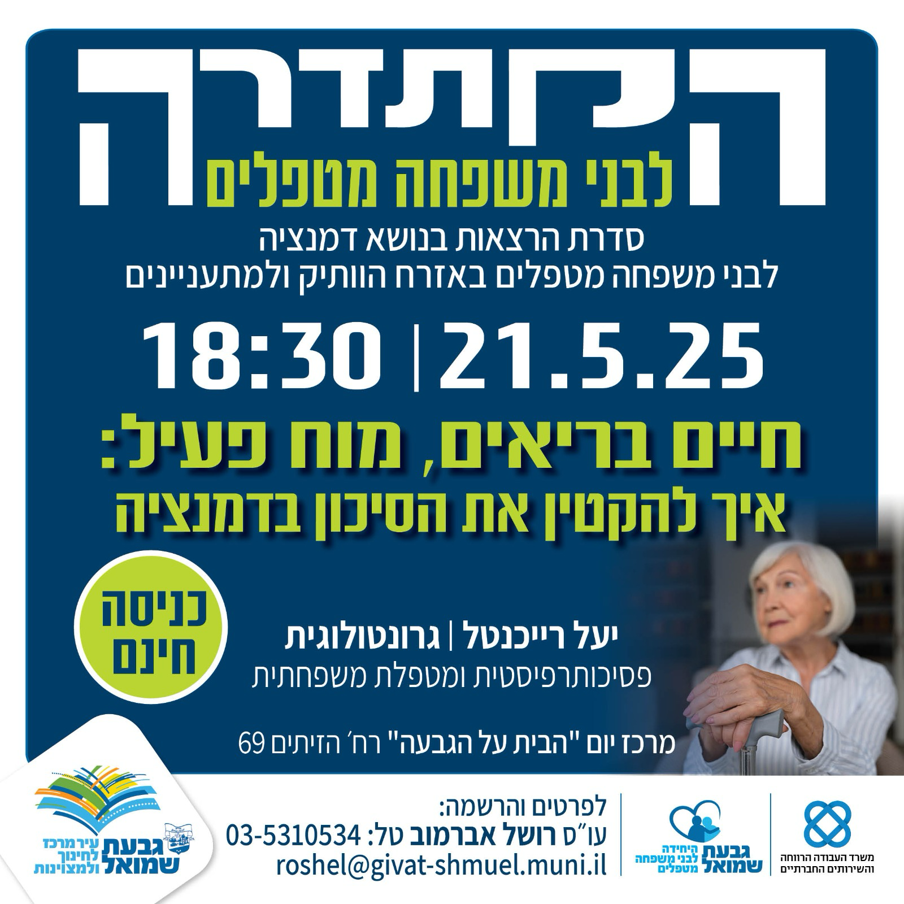
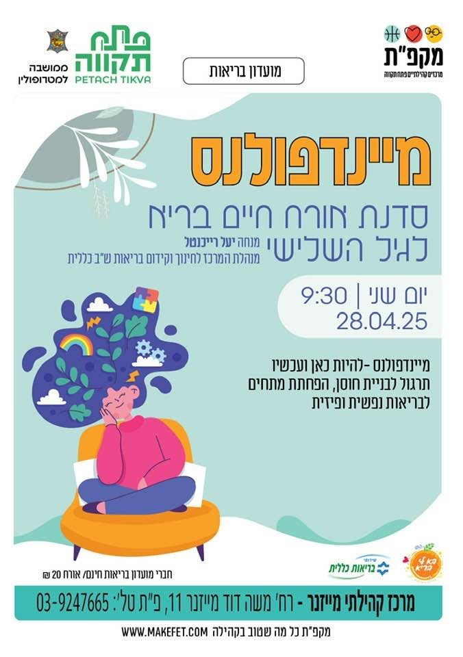
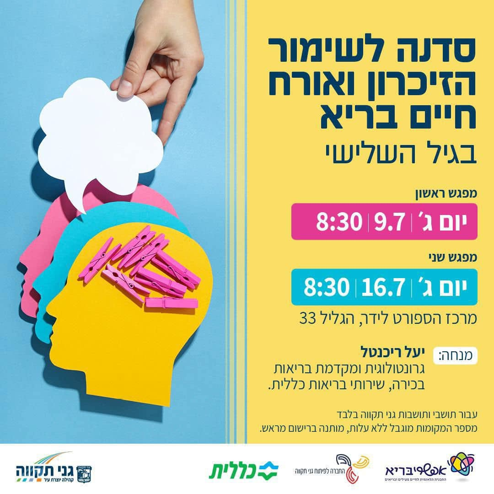
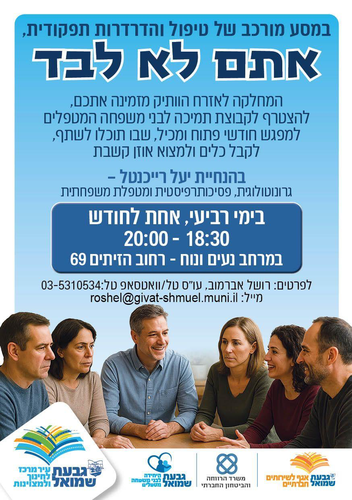
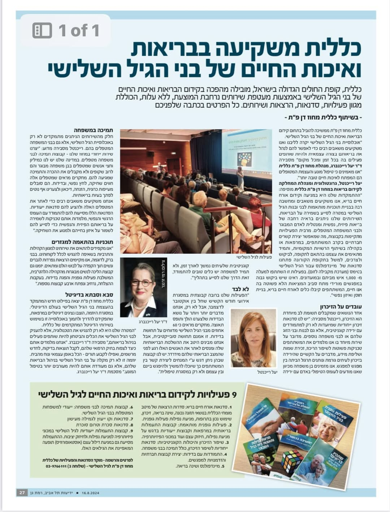
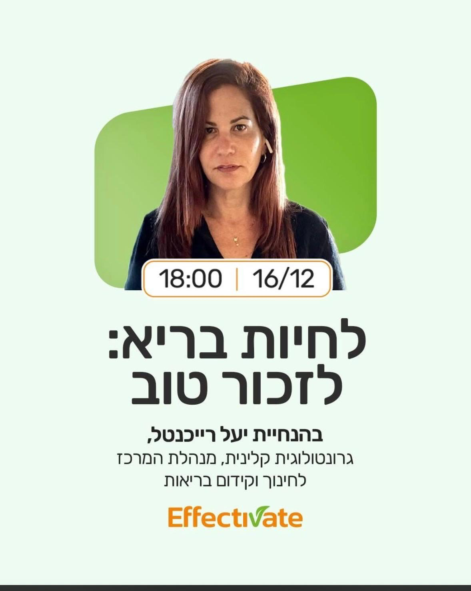

שיפור ושימור הזיכרון
גני תקווה · 1.11.2026
הרצאות וסדנאות לקהל הרחב ולאנשי מקצוע, בנושאי זיכרון, שינה, מיינדפולנס, דמנציה, יחסים במשפחה והזדקנות מיטבית. התכנים מותאמים לקהל ולמסגרת.
מבחר מפגשים וסדנאות שיעל הנחתה בעבר. הפליירים מוצגים כתיעוד לפעילות מקצועית ולא כהזמנה לאירוע עתידי.

גני תקווה · 1.11.2026

גני תקווה · 18.10

גבעת שמואל · 21.5.2025

פתח תקווה · 28.4.2025

גני תקווה · 9.7 ו־16.7

גבעת שמואל
מפגשים לקהל מבוגר, מועדוני גמלאים, מרכזים קהילתיים ותוכניות העשרה.
הרצאות לעובדים, בני משפחה מטפלים, צוותי רווחה וקבוצות קהילתיות.
העמקת ההבנה בנושאי תקשורת עם אדם החי עם דמנציה, תמיכה במשפחות ובריאות בגיל המבוגר.
ההרצאות והסדנאות עוסקות בזיכרון, שינה, דמנציה, יחסים במשפחה והזדקנות מיטבית. אפשר לתאם הרצאה בודדת או סדרת מפגשים בהתאמה לקהל ולמסגרת.
איך הזיכרון פועל, מה משתנה לאורך החיים ואילו כלים מעשיים יכולים לסייע בארגון מידע ובזכירה בחיי היום־יום.
מתאים לקהל הרחב ולקבוצות בגיל המבוגר.
לבירור על הרצאה זוהקשר בין קשיבות, הרגלי שינה, מתח ורווחה אישית, והיכרות עם כלים שאפשר לשלב בשגרה.
מתאים לקהל הרחב ולקבוצות העשרה.
לבירור על הרצאה זוהיכרות עם השינויים הקוגניטיביים והרגשיים, לצד חשיבה על תקשורת מכבדת, צרכים משפחתיים ודרכי תמיכה.
מתאים לבני משפחה, צוותים וקהילות.
לבירור על הרצאה זומבט על הקשר שבין הורים מבוגרים לילדיהם הבוגרים, שינויי תפקידים, עצמאות, גבולות וקִרבה.
מתאים לקהילות ולקבוצות משפחתיות.
לבירור על הרצאה זוהקשרים שבין שינה, הרגלי חיים ותפקוד קוגניטיבי, עם מקום לשאלות ולכלים יישומיים.
מתאים לתוכניות העשרה וסדרות מפגשים.
לבירור על הרצאה זוזיהוי עומס ושחיקה אצל בני משפחה מטפלים, חלוקת אחריות, בקשת עזרה ושמירה על צרכי המטפל.
נושא העוסק בעומס הטיפול המשפחתי, בשחיקה ובדרכים לקבלת תמיכה.
קריאה בנושא באתראפשר לפנות עם נושא מבוקש, סוג הקהל, מספר משתתפים, מיקום ותאריך משוער. יעל תוכל לשוחח על התאמת התוכן והפורמט.
פנייה להזמנת הרצאהניתן לפנות עם מאפייני הקהל והמטרות ולבדוק עם יעל אפשרות להתאמה.
יעל השתתפה בעבר בסדרות הרצאה; אפשר לברר זמינות ומתכונת לסדרה חדשה.
אפשר לבקש פורמט מקוון ולבדוק התאמה וזמינות עם יעל.